Entender o comportamento também é cuidar da saúde.
A medicina veterinária comportamental busca compreender o animal como um todo — sua saúde física e emocional, história, ambiente, experiências e relações — para reduzir sofrimento, promover bem-estar e construir estratégias possíveis para cada família.
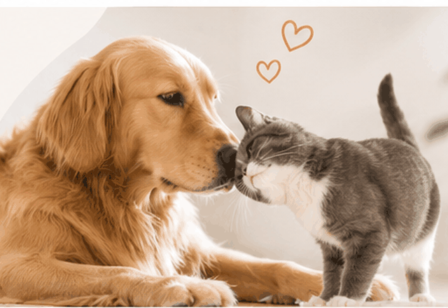
Bem-estar e Comportamento Animal
Corpo, mente, ambiente e família fazem parte do cuidado.
O comportamento é avaliado dentro do contexto de vida de cada animal. O objetivo é compreender fatores médicos, emocionais, ambientais e relacionais e construir um plano que respeite suas necessidades e a realidade da família.
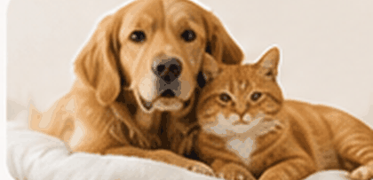
Investigamos fatores de saúde que possam contribuir para alterações comportamentais e para o bem-estar.
Consideramos medo, ansiedade, estresse e outros estados emocionais envolvidos no comportamento.
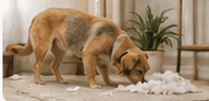
Avaliamos como o ambiente pode favorecer segurança, previsibilidade, expressão de comportamentos e qualidade de vida.
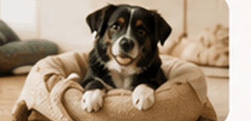
Consideramos rotina, experiências e mudanças que podem influenciar o comportamento e a capacidade de adaptação.
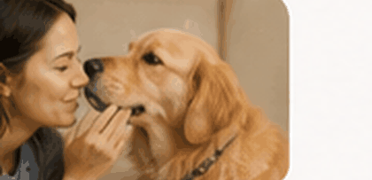
Consideramos as relações do animal e trabalhamos em parceria com a família, dentro das possibilidades reais de cada casa.
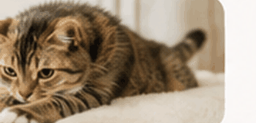
Buscamos reduzir medo, distresse e sofrimento e favorecer segurança, autonomia e qualidade de vida.
Comportamentalista ou adestrador — qual a diferença?
São abordagens diferentes, que muitas vezes se complementam.
- Foca no ensino e desenvolvimento de comportamentos e habilidades específicas.
- Trabalha a comunicação entre tutor e pet no dia a dia.
- Pode contribuir para a aprendizagem de habilidades e para a rotina de treinamento.
- Avalia de forma integrada saúde, emoções, ambiente, experiências, aprendizagem e relações.
- Formula hipóteses diagnósticas e constrói um plano individualizado de cuidado e tratamento.
- Pode integrar manejo ambiental, modificação comportamental e, quando indicado, tratamento farmacológico e investigação clínica.
Em muitos casos, as duas abordagens podem se complementar: o treinamento auxilia na aprendizagem de habilidades e na construção de repertórios comportamentais, enquanto a medicina veterinária comportamental avalia de forma integrada os fatores de saúde, emocionais, ambientais e relacionais envolvidos no comportamento.
Saúde comportamental em diferentes momentos da vida.
Não é preciso esperar que um problema de comportamento esteja estabelecido para buscar orientação. A medicina veterinária comportamental pode ajudar diante de dificuldades já presentes, dos primeiros sinais de mudança ou de forma preventiva, preparando o animal e a família para novas fases e experiências.
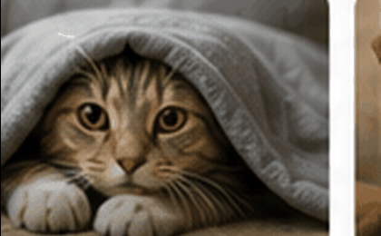
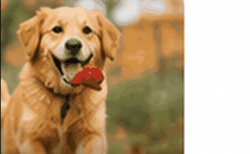
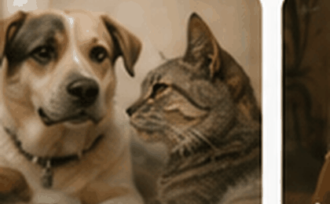
O atendimento não começa apenas quando algo dá errado.
A saúde comportamental também pode ser acompanhada de forma preventiva e durante períodos de adaptação.
- Medos e fobias, ansiedade, agressividade, reatividade e dificuldades relacionadas à separação.
- Eliminação fora do local esperado, conflitos entre animais, comportamentos repetitivos e outras alterações que afetem o bem-estar.
- Primeiros sinais de mudança que preocupam a família, mesmo quando ainda não está claro o que está acontecendo.
- Orientação para filhotes e animais recém-adotados ou resgatados.
- Preparação para chegada de bebê, criança ou novo animal, mudanças de casa, trabalho ou rotina.
- Estratégias para cães e gatos com medo de consultas, transporte, exames ou outros cuidados veterinários.
Também é possível buscar orientação para compreender melhor as necessidades do seu animal, aprimorar ambiente e rotina e favorecer bem-estar e qualidade de vida ao longo das diferentes fases da vida.
Compreender antes de intervir.
O atendimento busca entender o que o comportamento comunica e quais fatores o influenciam. A partir dessa avaliação, o plano é construído em conjunto com a família e ajustado ao longo do acompanhamento.
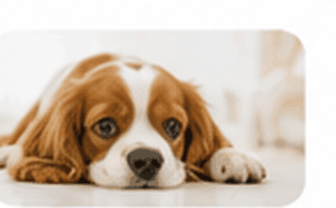
Você conta o que está acontecendo, o histórico, as preocupações e os objetivos da família.
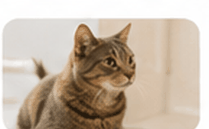
Integramos história clínica e comportamental, emoções, ambiente, rotina, relações e necessidades do animal.
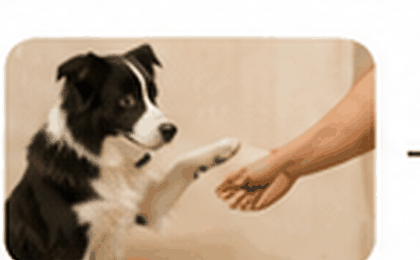
Construímos um plano multimodal e individualizado, compatível com as necessidades do animal e a realidade da família.
Acompanhamos respostas, dificuldades e qualidade de vida, ajustando as estratégias sempre que necessário.
A domicílio ou online, conforme a necessidade.
Atendimento a domicílio na Grande Florianópolis e atendimento online.
Consulta a domicílio
Grande Florianópolis
A avaliação acontece na casa do pet — o ambiente onde os comportamentos realmente acontecem.
- Observação do pet no seu ambiente real, com a família e a rotina.
- Identificação de estímulos, contextos e situações associados às respostas comportamentais.
- Orientações práticas aplicadas ao espaço em que o pet vive.
Benefícios
- Pode reduzir o estresse associado ao transporte e ao ambiente clínico para alguns animais.
- Permite observar aspectos do comportamento e do ambiente no contexto em que parte da rotina acontece.
- Toda a família pode participar, no próprio ambiente.
Online
Onde você estiver
Atendimento por videochamada, indicado conforme a avaliação de cada caso.
- Sessão por videochamada, com a família no ambiente do pet.
- Bom para acompanhamento contínuo e retornos entre consultas.
- Indicado também para tutores fora da Grande Florianópolis.
Benefícios
- Praticidade: sem deslocamento, direto da sua rotina.
- Facilita retornos mais frequentes e acompanhamento contínuo.
- Amplia o acesso para quem mora fora da Grande Florianópolis.
Comportamento e bem-estar também fazem parte do cuidado hospitalar.
Consultoria e capacitação de equipes para integrar o cuidado emocional à rotina clínica e à internação de cães e gatos.
Dor, doença, separação da família, ambiente desconhecido, ruídos, odores e manipulações frequentes podem contribuir para medo, ansiedade e estresse durante a hospitalização. A proposta é avaliar esses fatores e construir estratégias aplicáveis à realidade de cada serviço, considerando simultaneamente o estado clínico, o estado emocional e a segurança do paciente e da equipe.
Consultoria institucional
Avaliação das rotinas e do ambiente sob a perspectiva do comportamento e do bem-estar do paciente hospitalizado.
- Ambiente de internação e organização de canis e gatil
- Identificação de fatores associados a medo, ansiedade e estresse
- Rotinas de manipulação, transporte e procedimentos
- Estratégias individualizadas de manejo e redução de estressores
Treinamento de equipes
Capacitação de médicos-veterinários, auxiliares e demais profissionais para reconhecer e responder às necessidades comportamentais dos pacientes.
- Linguagem corporal e reconhecimento de FAS
- Manejo e contenção com foco na redução de medo, ansiedade e estresse
- Prevenção da escalada de medo e distresse
- Abordagem de pacientes com dificuldades de manipulação
Protocolos personalizados
Desenvolvimento de materiais práticos adaptados à estrutura, à equipe e aos fluxos de cada serviço veterinário.
- Fluxogramas de manejo e tomada de decisão
- Checklists para procedimentos frequentes
- Cards de consulta rápida para a equipe
- Registro do estado emocional e plano individual de manejo
Informação para quem quer entender melhor.
Em breve, artigos e vídeos sobre comportamento e bem-estar animal.
Perguntas frequentes
O que é medicina veterinária comportamental?
É uma área da medicina veterinária que avalia o comportamento dentro de uma visão integrada do animal, considerando saúde física e emocional, história, ambiente, experiências, aprendizagem e relações. O tratamento é individualizado e pode combinar mudanças ambientais, modificação comportamental e, quando indicado, tratamento farmacológico e investigação clínica.
Quando procurar uma avaliação?
A avaliação pode ser indicada diante de medo, ansiedade, agressividade, alterações de comportamento, dificuldades de adaptação ou situações que comprometem o bem-estar. Também pode ter caráter preventivo, como na chegada de um filhote, adoção, mudança de casa, alterações na rotina ou preparação para novas situações.
O atendimento online está disponível?
Sim. O atendimento online está disponível, conforme avaliação da modalidade adequada ao caso.
Onde são realizados os atendimentos presenciais?
Na Grande Florianópolis.
Qual a diferença entre um adestrador e uma médica veterinária comportamentalista?
O treinamento pode atuar no ensino de habilidades e na construção de repertórios comportamentais. A medicina veterinária comportamental realiza avaliação clínica e comportamental integrada, considerando saúde, emoções, ambiente, aprendizagem e relações, e pode estabelecer um plano multimodal de tratamento. As duas áreas podem trabalhar de forma complementar.
Preciso levar meu pet para a primeira conversa?
Não necessariamente. Muitas famílias iniciam com uma conversa sobre a rotina e o histórico do pet antes da etapa de avaliação, combinada conforme cada caso.
Vamos compreender o que está acontecendo com seu animal?
A avaliação é o primeiro passo para compreender o comportamento e construir um plano de cuidado individualizado.
Agende uma avaliação.
Médica Veterinária CRMV 07725-SC - Bem-estar e Comportamento Animal.